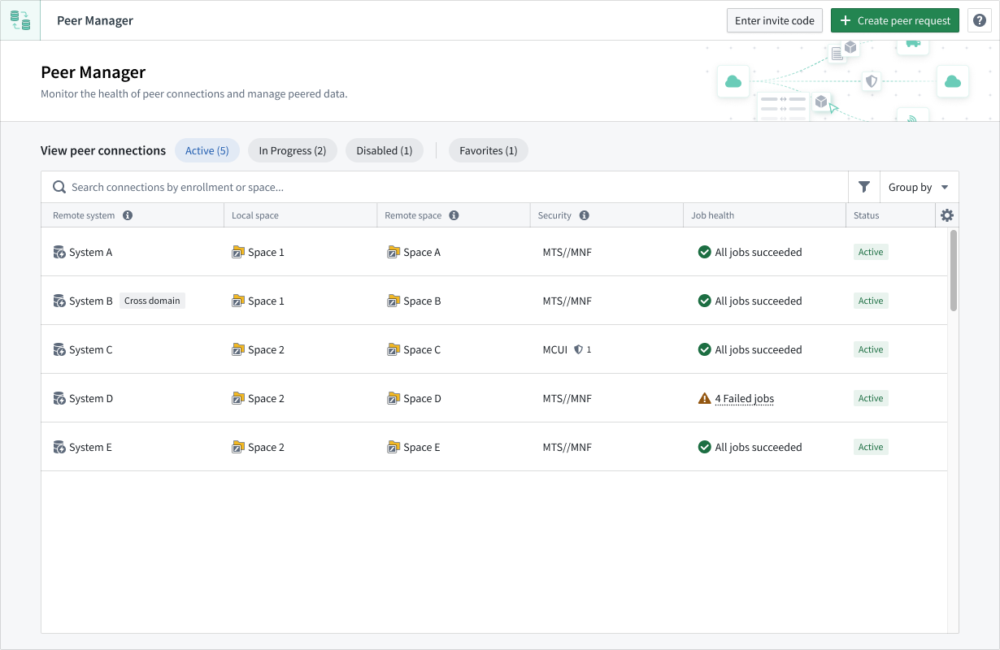
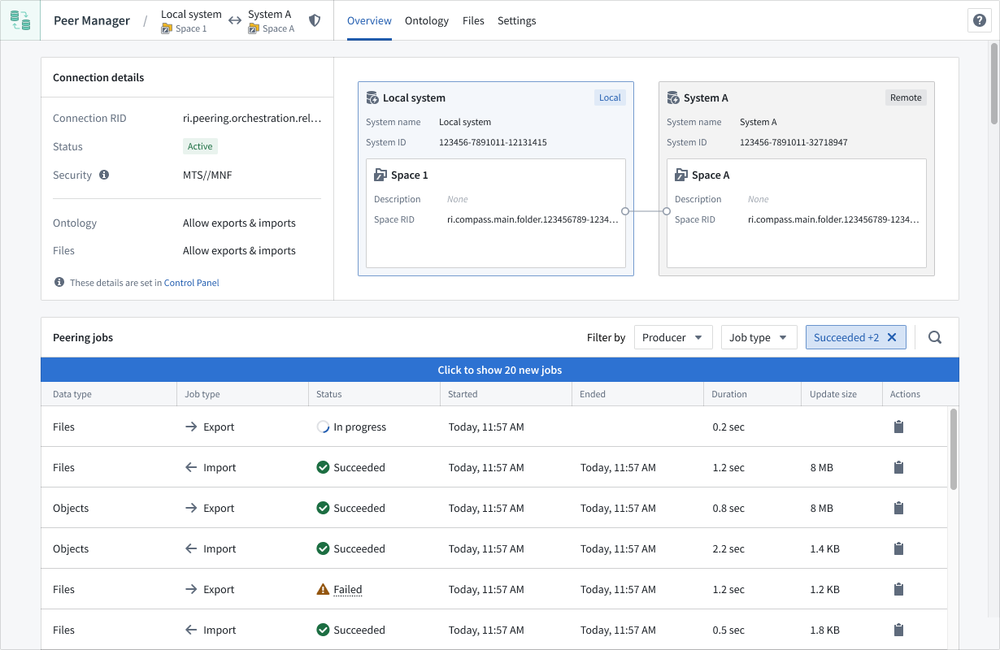

Peer Manager
The Peer Manager application enables you to view and monitor jobs associated with established peering connections, which provide the ability to import or export objects between Foundry enrollments.

Features
- Create peer connections: Create or import peer connection invite codes to create a peer connection from your enrollment to another enrollment.
- View peer connections: Select a connection to launch the application's Overview window, where Peer Manager displays the data type, source, and directionality of peering connections associated with your spaces.
- Configure ontology peering: Synchronize ontology data across peer connections through Ontology peering.
- Configure file peering: Synchronize Gotham files across peer connections through file peering.
- Manage data sharing at scale: Use peer profiles to define reusable data sharing configurations and apply them consistently across many peer connections at once.
- Monitor peering jobs: Track the health of your peer connections by viewing the status of individual peering jobs.
